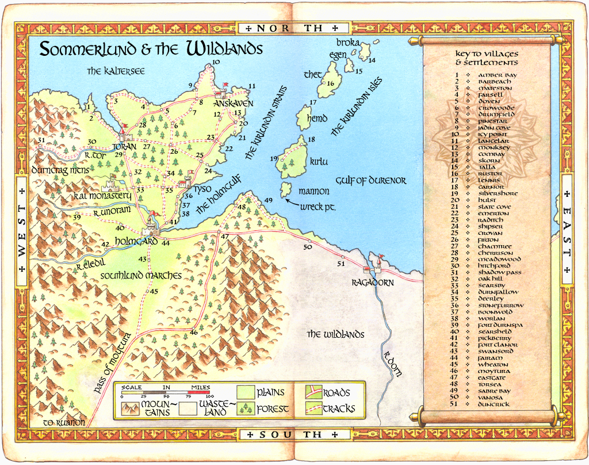

Sommerlund and the Wildlands
{kind=link}

The proud country of Sommerlund juts eastwards into the cold Kaltersee. To the west it abuts the grim, grey wall of the Durncrag Mountains, a natural barrier protecting the Sommlending from the evil Darklords of Helgedad. Despite its proximity to the Darklands, Sommerlund is a prosperous and fertile country, with many towns and villages. Dotted from north to south along the Durncrags lie border outposts and forts such as Shadow Pass to the west of the city of Toran, and Fort Durnspa, to the northwest of the capital city, Holmgard.
North by northwest of Holmgard is Toran, while northeast is the city of Anskaven. Travelling west by southwest along the main highway from Anskaven through the villages of Pinestar, Doven, and Cherrison, would bring you to Toran. Sommerlund’s other city, Tyso, lies about fifty miles northeast along the coast from Holmgard.
Travelling east along the main highway from Holmgard to Durenor, a traveller would pass through the towns of Fairam and Eastgate, before the rugged hilly land gives way to the barren wasteland of the Wildlands. Two small Wildland villages cling to the coast, served by this highway, namely Vanosa and Duncrick, before the city of Ragadorn, which lies at the mouth of the River Dorn. Beyond Ragadorn, the highway continues east, with no further settlements for many leagues.
To the east of Sommerlund, in the Gulf of Durenor, lie the Kirlundin Isles, a small archipelago of islands that descend in a lazy arc from northeast to south. Of the named Kirlundin Isles—from north to south, Broka, Egen, Thet, Hemd, Kirlu, and Mannon—only Kirlu is large enough to sustain more than one town or village of any size. Between the Kirlundins and the mainland of Sommerlund lie the Kirlundin Straits.